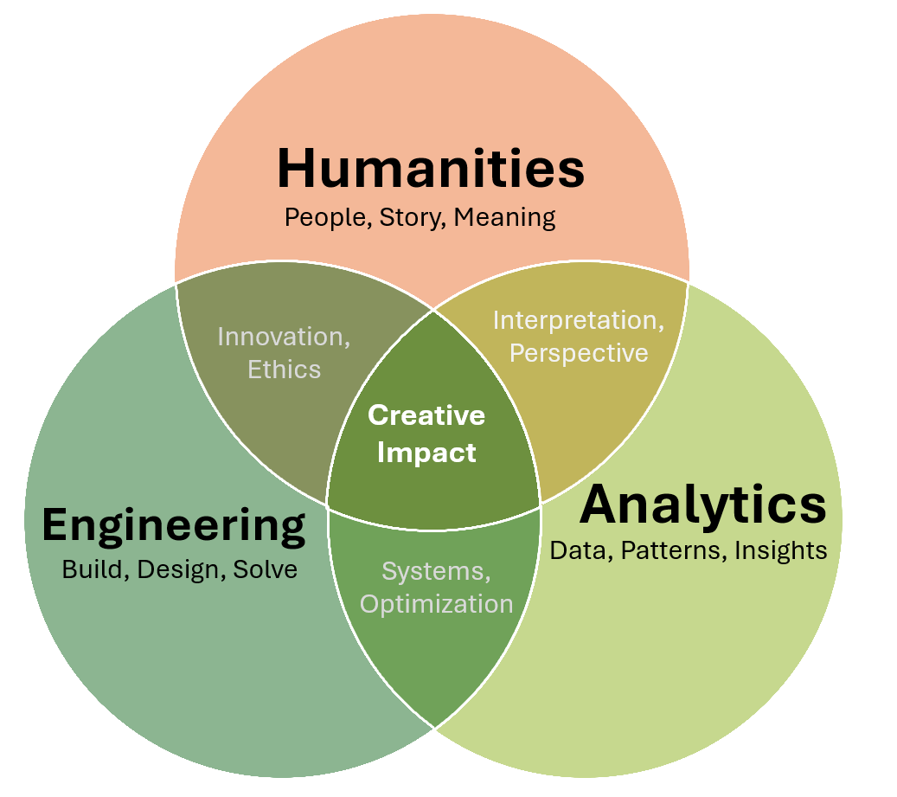
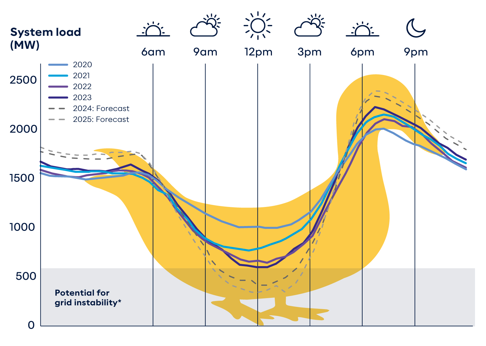

The Power of Interdisciplinary Thinking
I’ve always been drawn to the new and different: the ideas that push boundaries, challenge assumptions, and redefine what’s possible. Whether it’s uncovering patterns in data, questioning long-held beliefs in technology, or exploring the social forces that shape our world, I love the process of discovery. I’m drawn to understanding how things work—not just taking them at face value, but exploring different perspectives and possibilities to see what else might be there.
That’s why I find myself at the intersection of engineering, analytics, and the humanities. I know it might not seem like the most obvious combination (after all, there is left brain and right brain; numbers and logic on one side, stories and human experience on the other), but to me, they’re deeply connected.

Engineering and analytics give us the tools to build and understand complex systems, from energy grids to economic models. But the humanities help us ask the right questions. They remind us that technology doesn’t exist in a vacuum; it shapes and is shaped by people, culture, and history. To truly innovate, we need both—the precision of data and the depth of human insight.
Data can reveal social truths that impacts every individual, engineered solutions can be more effective when they consider human behavior, and storytelling and history can influence innovation. The world is built on connections between people, ideas, and disciplines. For me, the best way to make an impact is by embracing that interconnectedness, by considering what happens when we bring these fields together. This consideration fuels my curiosity, my work, and my passion for exploring the bigger picture.
Engineering
Engineering is the art of creation and problem-solving. It takes the world’s biggest challenges and transforms them into opportunities for innovation. At its heart, it’s about understanding systems and making them more efficient, reliable, and sustainable, all the while blending logic, creativity, and vision to shape the world around us. It’s a field that thrives on curiosity, asking not just how things work, but how they could work better. Whether it’s designing smarter cities, optimizing renewable energy, or advancing technology, engineering is about building what comes next.
Systems Thinking
Engineers solve problems by designing systems. Whether it’s infrastructure, software, energy grids, or manufacturing, real-world engineering challenges aren’t isolated. They exist within immensely complex, interconnected systems, where one change can influence everything else.
Systems thinking is a way of making sense of this complexity. Instead of just focusing on individual components, engineers look at how things interact, how information flows, and how small adjustments ripple through the entire system. Instead of focusing on individual parts, it’s about stepping back and looking at the bigger picture. Engineers ask:
- What are the key parts of this system?
- How do they influence each other?
- What happens if something changes?
- How can we optimize for efficiency, stability, or adaptability?
Most engineering systems can be broken down into:
| Component | Definition | Example |
|---|---|---|
| System | The entire structure with all its interconnected parts | Electrical grid |
| Subsystem | A functional unit within the larger system | Power generation, transmission, distribution |
| Unit Type | A specific element within a subsystem | Turbine, transformer, solar panel |
| Operations | The processes that keep the system running | Energy flow, load balancing, grid frequency regulation |
Understanding systems isn’t just about making things more efficient; it’s about making them work better as a whole, long-term. Without a systems mindset, solutions can be short-sighted, solving one issue while creating several new ones. Systems thinking prevents this by keeping the bigger picture in focus. In an increasingly complex world, the ability to step back, recognize patterns, and optimize for the bigger picture is what separates quick fixes from long-lasting solutions.
Energy Systems
Energy is everywhere. It moves our bodies, fuels our machines, and powers our cities. But energy itself doesn’t appear or disappear—it transforms. This is the foundation of thermodynamics, the study of how energy moves and changes forms.
At its core is the conservation of energy, which states that energy cannot be created or destroyed, only converted. Whether in a boiling pot of water, a moving car, or a power plant, the same principle applies:
\[ \Delta E = Q - W \] Expanding for all forms of energy:
\[ \Delta U + \Delta KE + \Delta PE = Q - W + m \left( \frac{P}{\rho} \right) \]
Where:
- \(U\) = Internal energy (heat stored inside an object)
- \(KE\) = Kinetic energy (energy from movement)
- \(PE\) = Potential energy (energy due to position)
- \(Q\) = Heat transfer (energy added or removed)
- \(W\) = Work done (energy used to move something)
- \(m\) = Mass (amount of matter in the system)
- \(P\), \(\rho\) = Fluid pressure and density (energy in flowing fluids)
These equation may look merely theoretical, but they are the blueprint for modern civilization. By understanding how energy moves, engineers have designed systems that harness it efficiently, from the simplest engines to the most advanced power grids. In fact, humans have used energy transformation to our advantage for thousands of years:
- Fire (Chemical → Thermal Energy) – Early civilizations burned wood to cook, stay warm, and forge metal.
- Steam Engines (Chemical → Thermal → Mechanical Energy) – In the 1700s, steam engines transformed heat from burning coal into movement, powering trains and industry.
- Power Plants (Chemical → Thermal → Mechanical → Electrical Energy) – The industrial revolution introduced power plants, scaling up energy conversion to produce electricity for entire cities. Common fuels used include coal, natural gas, and uranium.
- Renewables (Wind, Solar, Hydro) – Today, we’re transitioning to energy sources that convert natural forces directly into electricity—wind turbines (Kinetic → Electrical), solar photovoltaics (Light → Electrical), and hydroelectric dams (Mechanical → Electrical Energy).
Energy is the foundation of civilization. From early fire to modern power grids, the ability to transform and distribute it efficiently has shaped history. As technology advances, the way we generate and manage energy will define the future. Improving efficiency, integrating renewables, and designing smarter grids are challenges that will impact sustainability, industry, and daily life, making energy an important and exciting fields to explore.
Electrical Grid
According to the National Academy of Engineering, the number one greatest engineering achievement of the 20th century is electrification. It has enabled modern civilization, from lighting cities to powering industries, transforming nearly every aspect of daily life. Yet, over a century after its invention, the grid still operates on a rigid, century-old framework: power plants generate electricity, transmission lines carry it vast distances, and distribution networks deliver it to homes and businesses. This system has worked remarkably well—but it was built for a different era, one without widespread renewable energy or real-time analytics.
The challenge today is not just generating electricity, but distributing it efficiently in a rapidly changing world. Renewable energy sources like wind and solar introduce variability, requiring new approaches to maintaining a stable power supply. Climate change adds further urgency, demanding that we rethink how electricity is generated, stored, and delivered.
At its core, the grid is a network of interconnected subsystems, each with a crucial role:
- Power Generation – Energy is produced through coal, natural gas, nuclear, hydro, wind, and solar power.
- Transmission – High-voltage lines move electricity efficiently across long distances.
- Distribution – Local networks step down the voltage and deliver power to homes and businesses.
For over a century, these components have worked together to provide reliable electricity. But integrating intermittent renewables disrupts this balance, introducing complexities that traditional grid models weren’t designed for. The grid must match electricity supply with demand at every moment, but not all power sources operate the same way:
- Baseline power – Consistently running power plants, such as nuclear and coal, provide a steady supply of electricity.
- Peaker plants – Gas-powered plants can ramp up quickly during high demand but are expensive and inefficient to run frequently.
- Intermittent renewables– Solar and wind produce energy when nature allows, which doesn’t always align with demand.
Historically, baseline plants handled the majority of energy needs, while peaker plants filled in gaps during peak hours. But as renewables become more common, they disrupt this balance. Without better energy storage or grid flexibility, excess solar energy at noon can go to waste, while evening peaks still rely on fossil fuels.

Renewable energy generation can lead to overproduction when demand is low and shortages when demand is high. To manage this, grid operators must either curtail excess energy (wasting it) or store it for later use (which is currently limited). The goal is to flatten the duck curve by spreading out electricity demand and improving storage solutions. In other words, we need to make the grid a little less duck-shaped—because while ducks are great in ponds, they make for a pretty unstable energy system.
A quick note on supply and demand. Every year, our demand for electricity increases (i.e. more data centers, more electric vehicles, more air conditioning), but power generation remains relatively constant. This may seem counterintuitive, but it’s largely due to energy efficiency improvements. LED lighting, smarter appliances, and improved industrial processes allow us to do more with the same amount of energy. However, even with these gains, the shift to electrified transportation and digital infrastructure means we must rethink how we scale energy production.
Tomorrow’s grid must be smarter, more flexible, and data-driven. Engineers and analysts are developing solutions such as:
- Battery storage – Capturing excess renewable energy for later use.
- Decentralized microgrids – Local energy networks that improve resilience.
- Real-time analytics – Predicting demand fluctuations and optimizing power flow.
- Automated grid management – AI-driven decision-making for efficiency.
The grid may look only like infraastructure, but it is a complex dynamic system that shapes economies and societies. Transforming the grid requires balancing reliability, affordability, and sustainability. Simulating future grid scenarios with data analytics will help ensure a system that works for everyone and defines the future.
Analytics
Data science and machine learning are about understanding data, extracting insights, and making informed decisions. Before diving into predictive algorithms or optimization strategies, it’s important to step back and see the bigger picture of how models apply to our everyday life.
The first table breaks down different modeling approaches, from supervised and unsupervised learning to time-series analysis and probability-based methods. These categories help define how data is used, whether it’s predicting an outcome, grouping similar observations, or analyzing uncertainty.
But these aren’t just abstract technical concepts. Models like these help us make sense of the world. In a way, they’re not so different from how we think; after all, our brains function like neural networks, constantly learning from past experiences (our “training data”, if you will) and adjusting based on new information. We don’t need massive datasets or code to do it, but the process is familiar: we take in patterns, form expectations, and refine our judgment.
| Category | Models & Techniques | Purpose |
|---|---|---|
| Supervised Learning | Classificaiton (SVM, KNN), Regression (Linear, Logistic, Advanced), Decision Trees (CART, Random Forests), Neural Networks (Deep Learning) | Uses labeled data to predict outcomes. |
| Unsupervised Learning | Clustering (k-Means, DBSCAN), Dimensionality Reduction (PCA) | Finds patterns in unlabeled data. |
| Time-Series Models | Forecasting (ARIMA, GARCH), Trend Analysis (Exponential Smoothing), Change Detection (CUSUM) | Analyzes temporal dependencies for trend prediction. |
| Probability-Based Models | Distribution Fitting, A/B Testing, Markov Chains, Bayesian Statistics, Simulation | Models uncertainty and probabilistic relationships. |
But models don’t exist in isolation. The second table walks through the full data modeling pipeline, from preparing raw data to engineering meaningful features, applying descriptive, predictive, or prescriptive models, and finally ensuring the model is validated and deployable. Each step plays a role in making data-driven decisions more accurate, reliable, and actionable.
In many ways, this process mirrors how we reason and navigate the world. We:
- Gather information first: just like pre-modeling data preparation.
- Find patterns: similar to descriptive models identifying trends.
- Make predictions: drawing from past experiences, much like predictive models.
- Make decisions: choosing the best action, just like prescriptive models.
We start by gathering information (pre-modeling), focus on what matters (feature engineering), recognize patterns (descriptive models), anticipate outcomes (predictive models), and, when possible, make decisions to optimize results (prescriptive models). Then we deploy our model by communicating to others—though whether that “model” is fair, accurate, or completely overfitted to our own biases is a whole other discussion (and probably a debate waiting to happen).
| Stage | Key Concepts | Purpose |
|---|---|---|
| Pre-Modeling (Data Preparation) | Outlier Detection, Data Cleaning, Transformations, Scaling, Imputation | Ensures clean, high-quality data before modeling. |
| Feature Engineering | Variable Selection, Principal Component Analysis (PCA) | Reduces dimensionality and improves model performance. |
| Descriptive Models | Summary Statistics, Data Visualization, Clustering | Identifies patterns, trends, and structure in data. |
| Predictive Models | Supervised Learning, Time-Series Forecasting | Finds hidden relationships and forecasts future trends. |
| Prescriptive Models | Optimization, Simulation, Game Theory, Reinforcement Learning | Recommends actions to maximize desired outcomes. |
| Post-Modeling (Deployment) | Cross-validation, Model Evaluation, Bias Detection, Interpretability | Ensures reliability, fairness, and usability of models. |
Understanding this structure helps clarify when and why different techniques are used. Not every project needs all three modeling types (descriptive, predictive, and prescriptive), but seeing how they interact allows for better problem-solving and decision-making.
And just like AI, we’re constantly learning, adapting, refining, and making decisions based on experience. Whether we’re analyzing data, forecasting the future, or optimizing outcomes, these models aren’t just shaping technology; they reflect how we think, reason, and make sense of the world.
Exploratory Data Analysis
blurb on EDA, correlations/causations too, pivots
Machine Learning Models
blurb on models
Regression
blurb on regression
Humanities
blurb on humanities
Anthropology
blurb on anthropology
Sociology
blurb on sociology
Psychology
blurb on psychology
Philosophy
blurb on philosophy